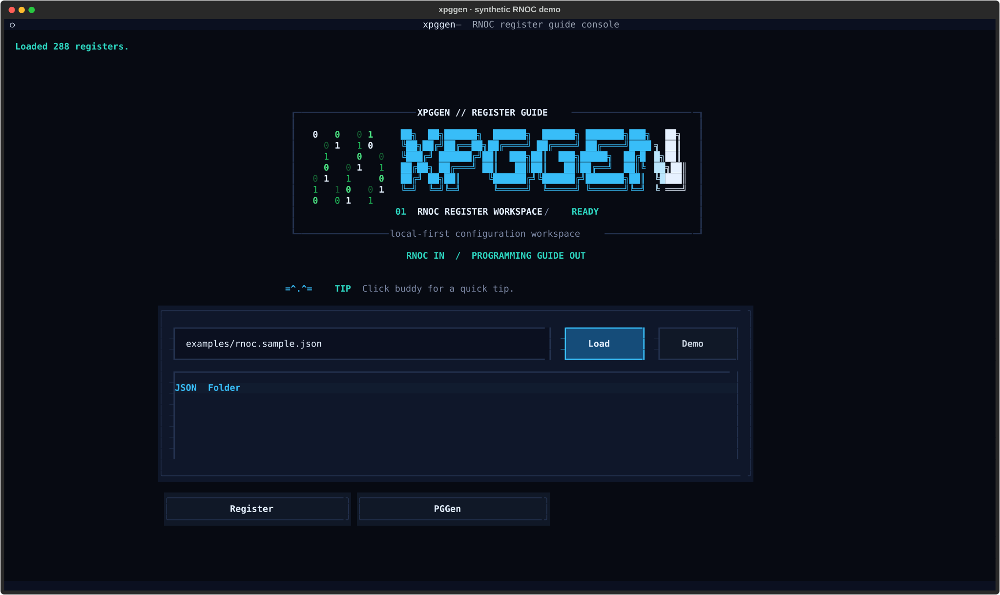

扁平 RNOC 目录
直接读取上游已展开的寄存器 JSON，搜索名称、字段、偏移和描述。
从寄存器搜索到多字段操作，把初始化意图整理成可检查、可导出的 Programming Guide。
以下五帧由当前提交的 XpgGenApp 实际运行并导出。切换场景查看界面；这里是截图回放，交互编辑与保存发生在本地 Python TUI 中。

载入 288 个合成寄存器，选择 Register 或 PGGen。
直接读取上游已展开的寄存器 JSON，搜索名称、字段、偏移和描述。
多个字段组成一次 RMW、read_check 或 poll，保留字段赋值及解析后的掩码。
JSON 保留流程语义；CSV、Markdown 与 SystemVerilog 方便检查、交流和接入。
使用仓库当前的 make_step 与四个 render_* 导出函数生成。示例先读控制寄存器，再写入、修改字段、检查、轮询，最后等待 25 μs。
| # | 操作 | 目标与值 | 语义 |
|---|
这些 SVG 直接来自固定提交的 previews/，反映项目原有的预览状态。上方五帧则为本次运行当前代码的新截图。
python -m pip install -e . python -m xpggen --demo